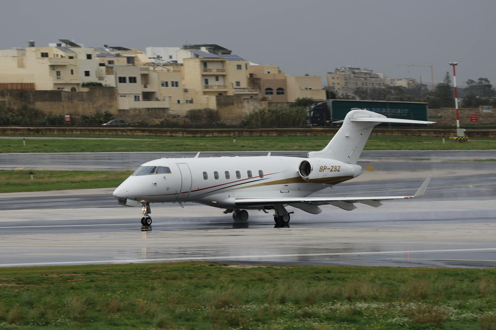

Introductie: Maastricht als Strategische European Gateway
Maastricht, gelegen in het uiterste zuiden van Nederland op het snijpunt van Nederland, België en Duitsland, is een unieke business aviation hub met een strategische tri-border positie. Maastricht Aachen Airport (MST) dient als BeNeLux regional gateway, ideaal voor international executives die toegang nodig hebben tot Zuid-Nederland, Belgisch Limburg, en de Duitse Rheinland regio binnen één uur rijden.
De stad zelf is een internationaal centrum voor toerisme, conferenties, en European institutions. MECC Maastricht is een major conference en exhibition venue attracting international business events. De Universiteit Maastricht en Maastricht School of Management brengen international academics en executives naar de regio. European institutions zoals het Maastricht Treaty signing location geven de stad symbolic European significance. Deze factors combineren om steady demand voor business aviation te genereren.
Maastricht Aachen Airport verwerkt jaarlijks 3.500+ business aviation movements, met groeiende focus op cross-border corporate travel en regional connectivity. Het airport biedt significant cost advantages vergeleken met Brussels (60 km) en Schiphol (220 km), met ground handling fees 20-30% lager, geen slot restrictions, en excellent flexibility. Voor companies en individuals die value BeNeLux regional access zonder de premiums van major hubs, is Maastricht een compelling alternative.
Maastricht Strategische Positie: Tri-Border European Crossroads
Maastricht's geographic position is zijn greatest asset voor business aviation. Gelegen op exact het snijpunt waar Nederland, België en Duitsland elkaar ontmoeten, biedt de stad unparalleled cross-border accessibility.
Geographic Advantages
Tri-border location: Maastricht ligt 10 km van Maastricht centrum, 30 km van Aken (Aachen, Duitsland), 40 km van Luik (Liège, België), en 60 km van Hasselt (België). Dit betekent dat binnen een 1-hour drive radius, passagiers toegang hebben tot Zuid-Limburg (Nederland), Belgisch Limburg, Oost-België rond Luik, en Nordrhein-Westfalen (Duitsland). Totale populatie binnen deze radius: 4+ miljoen mensen.
European positioning: Maastricht ligt centraal tussen major European cities. Frankfurt 200 km (1,5u drive / 55 min flight), Brussel 120 km (1,5u drive / 40 min flight), Parijs 350 km (3,5u drive / 1u flight), en Amsterdam 220 km (2,5u drive / 2u flight). Voor companies met operations spread across BeNeLux en Western Germany, is Maastricht often centrally positioned.
Southern Netherlands Gateway
Als meest zuidelijke Nederlandse airport met business aviation capabilities, dient MST de entire Zuid-Nederland regio. Eindhoven (75 km, 1u drive) heeft Eindhoven Airport maar met minder GA facilities. Venlo, Roermond, en Heerlen business communities vinden MST vaak convenientter dan Schiphol (2,5u+ drive). Maastricht regional economy focused op healthcare (university hospital), education (UM), tourism (historic city center), en cross-border commerce.
Waarom Maastricht's Tri-Border Position Matters
International executives kunnen one-stop operations vanuit MST runnen naar facilities in drie landen. Automotive suppliers serving Aachen region factories (Ford, Continental), logistics companies operating BeNeLux-Germany corridors, en consulting firms with multi-country clients kunnen MST als central hub gebruiken. Dit elimineert need voor multiple airports en vereenvoudigt travel logistics substantieel.
Maastricht Aachen Airport (MST) - Facilities & Capabilities
Maastricht Aachen Airport (IATA: MST, ICAO: EHBK) is een international airport met sterke cargo operations (DHL European hub) en growing business aviation segment. Het airport combineert cargo infrastructure efficiency met dedicated GA services.
Locatie & Bereikbaarheid
Airport ligt in Beek, gemeente Beek, 10 km ten noordoosten van Maastricht centrum. Direct toegankelijk vanaf A2 motorway (Nederland-België connection). Rijtijden: Maastricht centrum 15-20 min via A2, Aken centrum 35 min via A76/A4 (Duitsland), Luik centrum 45 min via A2/E25 (België), en Hasselt 50 min via A2.
Ground transportation: taxi via FBO pre-arranged (€25-€40 Maastricht, €50-€70 Aken, €60-€80 Luik), private car service met multi-country capability (€60-€150 depending on destination), rental cars on-site (Nederlandse en internationale providers), en public transport naar Maastricht via bus (budget option, 30 min). Cross-border taxi services familiar met three-country regulations.
Runway & Technical Specifications
Runway 03/21 met lengte 2.750 meter, width 45 meter. Dit is langer dan Rotterdam (2.200m) maar korter dan Schiphol (3.400m+). Runway capability: light jets (no restrictions), midsize jets (full capability), super midsize jets (excellent, no payload issues), en small large cabin jets (Citation Sovereign, Challenger 605, Gulfstream G450) mogelijk met standard European payloads. Ultra-long-range jets technisch mogelijk maar niet regular focus.
Deze 2.750m runway length is ideal voor European business aviation - accommodates 95% van typical private jets gebruiken voor intra-European travel zonder de congestion van longer runways die heavy commercial traffic attracteren. Perfect balance tussen capability en exclusivity.
General Aviation Terminal & FBO
MST heeft dedicated General Aviation terminal gescheiden van cargo en limited commercial operations. GA terminal features: VIP lounge met comfortable business facilities, private meeting rooms voor confidential discussions, shower/rest facilities, tri-lingual staff (Nederlands, Duits, Engels), multi-currency handling (EUR primary, acceptance van other currencies), en direct ramp access waardoor passengers binnen 5-10 minuten van aircraft naar vehicle kunnen verplaatsen.
FBO services provided by Maastricht FBO: ground handling en marshalling, customs/immigration expedited (Schengen en non-Schengen, tri-border expertise), security screening dedicated lanes, fueling Jet A-1 met competitive pricing €2,30-€2,70/liter, aircraft cleaning/detailing, hangar storage availability, maintenance coordination met local MRO partners, crew facilities met weather briefing, flight planning support, concierge services for multi-country ground transportation, en catering coordination (Nederlandse, Duitse, Belgische options).
Operational Advantages vs Neighboring Airports
Geen slot restrictions - volledige scheduling flexibility any time of day. Lower congestion dan Brussels/Schiphol resulteert in faster taxi times en minimal delays. Relaxed noise policies - night operations feasible met reasonable notice. Simplified tri-border operations - experienced staff familiar met Nederland/België/Duitsland customs requirements. Cost advantages - ground handling 20-30% lager dan major hubs. Weather comparable met Brussels - mild maritime climate met occasional winter fog.

European Positioning: Gateway to BeNeLux & German Industrial Centers
Maastricht's value proposition is zijn proximity to multiple economic regions en industrial centers die typically awkward to reach from single airport.
BeNeLux Regional Access
Zuid-Nederland: Eindhoven (75 km) - tech hub met Philips, ASML supply chain, high-tech manufacturing. Venlo, Roermond - logistics centers near German border. Heerlen - healthcare en services. Belgian Limburg: Hasselt (60 km) - logistics en distribution centers. Genk - automotive (historical Ford, now industrial park). Tongeren - regional commerce. Luik/Liège (40 km): Major Belgian city, logistics hub, university town, growing tech sector.
Deze BeNeLux regional concentration binnen 1 hour MST drive radius represents substantiële business opportunities. Companies met operations across this region kunnen MST als central hub gebruiken versus shuttling between Amsterdam, Brussels, en regional airports.
German Industrial Centers - Rheinland Access
Aken/Aachen (30 km): University city (RWTH Aachen - leading technical university), automotive suppliers, engineering firms, cross-border business with Netherlands. Cologne/Köln (90 km, 1,5u drive): Major German city, media hub, trade fair capital. Düsseldorf (100 km): German business capital, finance sector, corporate headquarters. Bonn (80 km): Former German capital, still major government presence. Deze Duitse Rheinland region easily accessible from MST - vaak faster dan flying into Cologne airport plus ground transport time.
Cultural & Business Profile
Tourism: Maastricht historic center attracts 1 million+ visitors annually - international tourism creates demand voor private aviation especially tijdens peak seasons. MECC conference center hosts 300+ events/year including international exhibitions (art fairs, business conferences, European sector events). University en education: Maastricht University (17.000 students) highly international, attracting visiting professors, researchers, en partnership delegations. European significance: Maastricht Treaty (1992) signed here created European Union - symbolic location voor EU-related events en meetings.
Comparison: Maastricht vs Brussels vs Cologne for Regional Business
Voor companies operating in BeNeLux-German border region, choosing between Maastricht, Brussels, en Cologne airports depends on specific needs, cost priorities, en operational focus.
| Criterium | Maastricht (MST) | Brussels (BRU/EBBR) | Cologne (CGN/EDDK) |
|---|---|---|---|
| Ground handling fees | €500-€1.300 | €1.200-€2.500 | €1.100-€2.300 |
| Landing fees | €250-€700 | €400-€1.000 | €350-€900 |
| Runway lengte | 2.750m | 3.200m+ | 2.460m |
| Slot restrictions | Geen | Ja (druk) | Beperkt |
| Congestie | Laag | Hoog | Medium |
| Max aircraft | Super midsize+ | Alle types | Midsize/Super midsize |
| FBO amenities | Standard/Functional | Premium | Standard |
| BeNeLux access | Excellent | Belgium focus | Limited |
| German access | Good (Rheinland) | Limited | Excellent |
| Cost advantage | 20-30% lager | Basis | 15-20% lager |
Wanneer Kiezen voor Maastricht
- Cross-border operations: Business in Nederland, België, en Duitsland within 1 hour radius
- Cost-focused: Budget priorities, 20-30% savings matter voor frequent trips
- Regional BeNeLux: Primary focus Zuid-Nederland en Belgisch Limburg
- German Rheinland access: Operations in Aken, Düsseldorf, Cologne corridor
- European short-haul: Light/midsize jets for 80%+ of missions
- Flexibility needs: No-slot environment, last-minute schedule changes
Wanneer Kiezen voor Brussels
- Belgian focus: Primary business in Brussels, Antwerpen, Ghent
- EU institutions: Frequent Brussels-based meetings, European Commission access
- Large aircraft: Regular use of large cabin jets, intercontinental capability
- Premium service: Client expectations for luxury FBO experience
- Long-haul connectivity: Occasional transatlantic or Middle East missions
Wanneer Kiezen voor Cologne
- German focus: Primary operations in NRW (Nordrhein-Westfalen)
- Cologne/Düsseldorf business: Finance, media, corporate headquarters access
- Trade fair presence: Frequent Cologne Messe/Düsseldorf exhibitions
- German operational preference: German-registered aircraft, local network
Hybrid Strategy: MST + Brussels for Global Reach
Optimal approach voor many regional operators: base operations at MST voor 85-90% van European missions (cost savings, flexibility, regional access), plus occasional positioning naar Brussels voor intercontinental trips. MST-Brussels flight: 25 min, €3.500-€5.500, slechts 5-10 trips/year. Annual positioning cost: €20.000-€40.000. Total savings vs full-time Brussels basing: €40.000-€80.000/year. Combines MST economics met Brussels global capabilities.
Cross-Border Routes: Frankfurt, Paris, Milan, Brussels, Luxembourg
Maastricht's route network focused op European business destinations met emphasis op BeNeLux-German-French connectivity. Popular routes reflecteren de regio's cross-border business relationships.
Top Business Routes from Maastricht
| Bestemming | Vliegtijd | Afstand | Charter (roundtrip) | Primary Use |
|---|---|---|---|---|
| Frankfurt (FRA) | 55 min | 250 km | €8.000-€15.000 | Banking/Logistics |
| Brussel (BRU) | 40 min | 120 km | €5.500-€11.000 | EU Business |
| Parijs (LBG) | 1u | 350 km | €9.000-€16.000 | Business/Culture |
| Luxembourg (LUX) | 30 min | 150 km | €4.500-€9.000 | Finance |
| Milano (LIN/MXP) | 1,5u | 700 km | €11.000-€20.000 | Design/Business |
| Londen (LCY/LTN) | 1,5u | 450 km | €8.000-€16.000 | Finance |
| München (MUC) | 1,5u | 550 km | €10.000-€18.000 | Automotive/Tech |
| Düsseldorf (DUS) | 45 min | 100 km | €7.000-€13.000 | German Business |
| Zürich (ZRH) | 1u | 450 km | €10.000-€17.000 | Swiss Finance |
| Kopenhagen (CPH) | 2u | 900 km | €12.000-€21.000 | Scandinavia |
Aircraft Recommendations for MST Routes
Light Jets (Citation CJ3+, Phenom 300, Learjet 45): Perfect voor short-range BeNeLux-German missions (Luxembourg, Brussels, Düsseldorf, Frankfurt). Operating economics excellent. Range tot 2.500 km covers 70% van typical MST routes. Recommended voor frequent regional travelers.
Midsize Jets (Citation XLS+, Hawker 900XP, Learjet 60): Optimal choice voor MST. Covers all typical European destinations (Londen, Paris, Milano, Zürich, Kopenhagen) comfortably. Extended cabin voor 3-4 hour missions. Runway compatibility perfect with MST's 2.750m. Best all-around voor Maastricht-based operations - balances range, comfort, en economics.
Super Midsize Jets (Citation Sovereign, Challenger 350, Gulfstream G280): Excellent match voor MST runway. Extended range (5.000+ km) allows direct flights naar Eastern Europe, Scandinavia, Southern Spain, en occasional transatlantic tech-stops. Premium cabin experience. Higher operating costs but justified voor companies needing extra range en comfort. Perfect voor MST's runway without being overkill.
Large Cabin Jets: Technically feasible maar typically unnecessary voor MST's European mission profile. Voor occasional long-haul: position naar Brussels of Schiphol.
Cost Advantages: Lower Fees vs Schiphol & Brussels
Een van Maastricht's strongest value propositions is zijn significant cost advantages vergeleken met neighboring major airports. Deze savings accumulate substantially voor frequent operators.
Detailed Cost Comparison
| Cost Category | Maastricht | Brussels | Schiphol | MST Savings |
|---|---|---|---|---|
| Ground handling (per op) | €500-€1.300 | €1.200-€2.500 | €1.500-€3.000 | €600-€1.500 |
| Landing fees (midsize) | €250-€700 | €400-€1.000 | €500-€1.500 | €200-€700 |
| Fuel pricing (per liter) | €2,30-€2,70 | €2,50-€2,90 | €2,50-€3,00 | €0,20-€0,30 |
| Hangar storage/maand | €1.800-€4.500 | €3.000-€7.000 | €3.000-€8.000 | €1.500-€3.500 |
| Parking (per night) | €80-€200 | €150-€350 | €200-€400 | €100-€200 |
| Slot fees | €0 | Variable | Variable | €100-€500 |
Annual Savings Example
Aircraft: Citation XLS+ (midsize jet)
Operations: 80 flights/year (40 roundtrips) European business
Base: Maastricht Airport hangar
Maastricht Annual Costs:
Ground handling: 80 ops × €900 avg = €72.000
Landing fees: 80 ops × €450 avg = €36.000
Hangar: 12 months × €3.000 = €36.000
Fuel savings vs Brussels: ~€8.000
Total Variable Airport Costs: €152.000
Brussels Equivalent Costs:
Ground handling: 80 ops × €1.800 avg = €144.000
Landing fees: 80 ops × €700 avg = €56.000
Hangar: 12 months × €5.000 = €60.000
Fuel baseline: €0
Slot fees: ~€10.000
Total Variable Airport Costs: €270.000
Annual Savings: €118.000 (44% reduction)
Voor owners flying 100+ hours/year vanuit BeNeLux region, Maastricht basing kan €50.000-€120.000/year besparen vs Brussels of Schiphol while maintaining excellent regional access. These savings can offset aircraft depreciation, fund additional flying hours, of improve bottom line substantially.
FBO Pricing Transparency
Maastricht FBO publishes clear pricing structure (unusual in European GA landscape): Light jets €500-€800 per handling, midsize jets €800-€1.300, super midsize €1.200-€1.600. Fuel surcharges minimal. No hidden fees for night operations, customs, of weekend services. This pricing transparency helps operators budget accurately en avoid surprise charges common at major hubs.
Target Audience: International Business & Cross-Border Operations
Maastricht's ideal users zijn companies en individuals met specific cross-border business needs en value-conscious operating philosophies.
International Business Executives
CEOs en senior management van companies with operations across BeNeLux-German border region: Automotive suppliers serving Aken/Cologne factories, logistics companies operating Nederland-België-Duitsland corridors, chemical/pharmaceutical firms met sites in Limburg/NRW, en consulting firms with multi-country clients. These executives value MST's central location more than Schiphol's brand prestige.
Family offices: Wealth management entities serving international families met assets spread across multiple jurisdictions. MST offers privacy, efficiency, en cost advantages voor regular family travel to business locations, property inspections, en board meetings.
Cross-Border Operations Specialists
Companies specifically leveraging tri-border arbitrage: Distribution centers optimizing Dutch, Belgian, German logistics. Manufacturing operations sourcing from multiple countries. Professional services firms (law, accounting, consulting) serving international clients. Real estate investors with portfolios across BeNeLux-Germany. These operators make 50+ trips/year within 500 km radius - MST's cost structure delivers massive savings.
BeNeLux Executives
Belgian Limburg business owners: Companies based in Hasselt, Genk, Tongeren region finding MST more convenient than Brussels (1 hour drive vs 1,5 hour). Zuid-Nederland executives: Eindhoven tech sector, Venlo logistics, companies in Heerlen/Sittard for whom MST is closest option. Luxembourg finance professionals: 30-minute flight from Luxembourg makes MST interesting voor connections naar rest of Europe.
MECC Conference Attendees
International delegates to MECC Maastricht events: Art fair attendees (TEFAF Maastricht - world's leading art fair), business conference participants, exhibition organizers. MST provides direct access versus Brussels + 2-hour drive. During peak TEFAF week (March), private jet traffic naar MST increases 300% - dedicated handling protocols voor high-value client arrivals.
Privéjet Huren vanuit Maastricht
Charter services vanuit Maastricht are readily available via Nederlandse operators, Belgian brokers, en international charter companies. MST's growing reputation als cost-effective BeNeLux hub attracts charter providers.
Charter Pricing from Maastricht
Tarieven competitief met cost advantages vs major airports:
- Light Jets (Citation CJ3+, Phenom 300): €2.500-€4.200 per vlieguur. Perfect voor BeNeLux-German regional missions. Maastricht-Luxembourg €4.500-€9.000 (30 min), Maastricht-Brussels €5.500-€11.000 (40 min), Maastricht-Frankfurt €8.000-€15.000 (55 min). Ground handling savings €300-€600 per roundtrip vs Brussels departure.
- Midsize Jets (Citation XLS+, Hawker 900XP): €4.800-€7.200 per uur. Optimal voor extended European trips. Maastricht-Londen €8.000-€16.000, Maastricht-Paris €9.000-€16.000, Maastricht-Milano €11.000-€20.000. Best value proposition voor MST charter - matches airport capabilities perfectly.
- Super Midsize Jets (Citation Sovereign, Challenger 350): €6.500-€9.500 per uur. Premium comfort voor longer missions. Maastricht-Kopenhagen €12.000-€21.000, Maastricht-Barcelona €13.000-€23.000, Maastricht-Oslo €13.000-€22.000.
Empty Legs from Maastricht
Growing market as MST traffic increases. Common patterns: repositioning flights naar Brussels/Schiphol, returns from Frankfurt/Paris inbound legs, en seasonal leisure deadheads (Nice/Ibiza returns tijdens summer). Check Victor, JetApp, en PrivateFly for MST listings. Typical discounts: 40-65% off standard charter. Best voor flexible travelers within BeNeLux region willing to adjust departure times by few hours.
Unique opportunity: cross-border empty legs. Belgian aircraft repositioning naar Nederland of vice versa often list MST as pickup point due to central location. These can offer exceptional value (€3.000-€5.000 voor trips normally €10.000+).
Nederlandse Charter Operators Serving MST
Major Nederlandse operators provide MST services: Solid Air (Utrecht-based, Citation fleet), Exxaero (Rotterdam-based, flexible fleet), ASAP Jet (Amsterdam-based broker, access to pan-European fleet). Belgian operators: Air Service Liège, Luxaviation Belgium (extensive European fleet). International brokers: Avinode, Victor, PrivateFly have MST in their systems met growing aircraft availability.
Voor comprehensive charter guidance en pricing strategies, zie onze Huren vs Kopen Guide.
Privéjet Kopen voor Maastricht-Based Operations
Ownership vanuit Maastricht base maakt economic sense voor companies en individuals flying 100+ hours/year within European theater met emphasis op BeNeLux-German operations.
Optimal Aircraft for MST Basing
Best Overall Choice: Midsize Jets
Citation XLS+ (8 pax, 3.700 km range): Most popular choice voor MST owners. Covers all typical European routes, excellent reliability, proven platform, reasonable operating costs €5.500-€6.500/hour all-in. Hawker 900XP (9 pax, 3.900 km range): Spacious cabin, great value on pre-owned market, solid performance. Perfect match voor MST runway en mission profile.
Super Midsize for Extended Missions:
Citation Sovereign (9 pax, 5.000 km range): Extended range allows direct Eastern Europe, Scandinavia, occasional transatlantic tech-stops. Premium cabin comfort. Higher costs (€7.000-€8.500/hour) but justified voor companies needing flexibility. Challenger 350 (10 pax, 5.900 km range): Excellent range, modern avionics, comfortable cabin. Ideal als primary aircraft offering true intercontinental capability when needed.
Light Jets for Budget-Conscious:
Citation CJ3+ (7 pax, 3.400 km range): Lower acquisition cost (€7-€10 miljoen pre-owned), operating costs €4.000-€5.000/hour, perfect voor frequent short-haul BeNeLux missions. Phenom 300 (7 pax, 3.700 km range): Modern, fuel-efficient, popular choice. Great economics voor cost-focused operators.
Tax & Registration for MST-Based Aircraft
Nederlandse registration (PH- prefix) standard voor MST-based aircraft owned by Nederlandse entities. Tax structure identical als Amsterdam/Rotterdam: BPM avoided via corporate structures, BTW (21%) reclaimable voor zakelijk gebruik, ownership via Nederlandse BV optimal for efficiency. Maastricht-specific advantage: local tax advisors familiar met cross-border structures useful voor owners met Belgian/German business interests.
Alternative: Belgian registration (OO- prefix) mogelijk for Belgian-owned aircraft using MST. Some Belgian owners prefer this for insurance/liability reasons. German registration (D- prefix) rare maar possible. Cross-border operational complexity slightly higher but manageable voor experienced operators.
Aircraft Management & Maintenance
Management companies: Nederlandse aircraft management firms (AAS, JetNetherlands) provide MST-based management services. Belgian operators (Luxaviation Belgium, Air Service Liège) also serve MST clients. International management companies (Jetfly, NetJets Europe) can accommodate MST basing with minor logistics considerations.
Maintenance: MST heeft on-field MRO capabilities voor lighter maintenance. Major inspections typically done at specialized facilities (RUAG Switzerland, Jet Aviation Basel, Luxaviation Brussels). MST's central location maakt ferry flights naar these facilities convenient (1-2 hour flights).
Voor complete aircraft buying guide inclusief pre-purchase inspections en financing options, zie onze Privéjet Kopen Gids.
Regelgeving, Operaties & Environmental Considerations
Maastricht operations vallen onder Nederlandse/EASA regulations met some unique considerations due to tri-border position.
EASA Compliance & Operational Requirements
All MST operations must comply with EASA Part-M (continuing airworthiness), Part-NCO/NCC depending on operation type, en standard European operational requirements. ILT (Nederlandse CAA) oversight for Nederlandse-registered aircraft. Foreign registrations (Belgian OO-, German D-, etc.) accepted with proper EASA compliance documentation. MST ATC professional en GA-friendly, experienced with international traffic.
Tri-Border Customs & Immigration
Unique advantage: MST customs officers experienced with Nederland-België-Duitsland operations. Simplified processing for passengers traveling across borders. Schengen operations straightforward (no passport control needed). Non-Schengen arrivals handled efficiently with dedicated immigration facilities. Multi-currency acceptance in FBO (EUR primary, USD/GBP common). MST can process passengers destined for any of three countries with proper documentation.
Noise & Environmental Policies
Maastricht heeft pragmatic noise approach - relaxed policies vergeleken met major hubs. Night operations (23:00-06:00) feasible met advance notification, geen strict quotas. Noise monitoring present maar geen penalty system like Schiphol. Older aircraft accepted without surcharges. Environmental compliance: EU ETS en CORSIA applicable identiek als other European airports. SAF (Sustainable Aviation Fuel) beschikbaar on request, blending ratios up to 30% supported.
Future outlook: MST unlikely to krijgen restrictive policies seen at major hubs. Cargo focus (DHL hub) en limited residential proximity mean noise complaints minimal. Positioned as long-term viable business aviation base zelfs als other airports tighten restrictions.
Weather & Operational Considerations
Maastricht weather similar to Brussels - mild maritime climate influenced by North Sea. Winter fog occasional concern (December-February), Cat I ILS approach available. De-icing services readily available November-March, competitive pricing €250-€1.000 per treatment. Summer operations excellent with minimal weather delays. Runway 2.750m provides good margins for wet runway operations. ATC (Maastricht Approach) professional, delays rare even during weather events.
FAQ - Privéjet Maastricht
Start Uw Privéjet Zoektocht Vanuit Maastricht
Ontdek welke privéjet optie het beste past bij uw cross-border business needs - kopen, huren, of fractional ownership vanuit Maastricht.
Vragen over Maastricht privéjet services? Contact@jetselect.nl